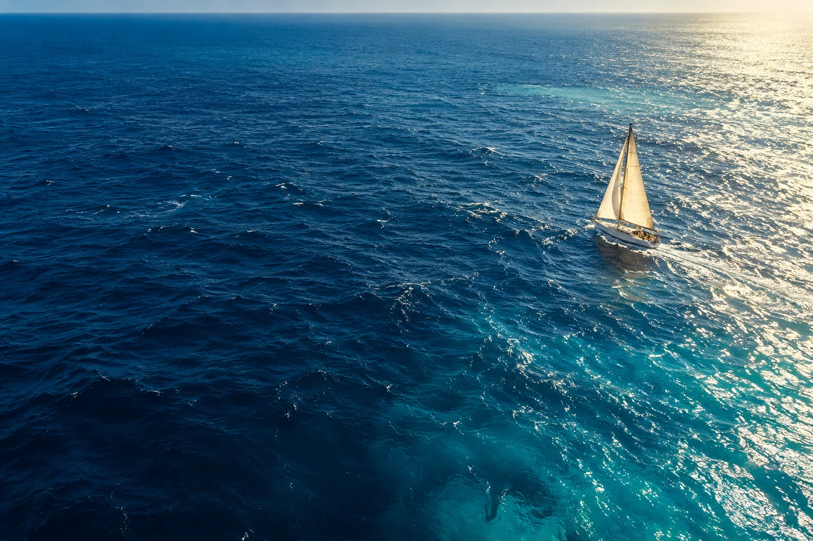

A sailing community concept
Life afloat,
a little closer.
An idea for a smaller circle around the big blue. Stories from the water, the everyday in between, and room to connect.
Explore the journalThe idea, at a glance
Lauren Landers
Sailing stories. Life aboard. A shared horizon.
Visitor sample · All ten editorial examples are available to explore.
A window into life afloat
From the journal
A sample member welcome. This display does not create membership or change access.
Ten starting points for a community, each clearly marked as a sample. Public videos open on YouTube.
Room for an idea
A community, imagined.
A Wild Hub design study for Lauren Landers. Sample content, not an official community. The editorial ideas here are written by Wild Hub and are not authored, approved, or endorsed by Lauren.
The two public video links are attributed to Lauren Landers Sailing. The sailing artwork is AI-generated and illustrative. It does not depict her footage, vessel, or a claimed location.